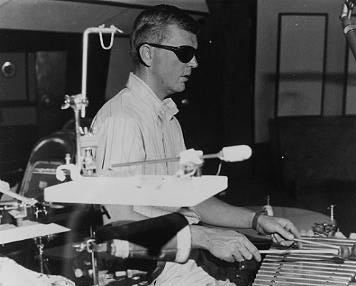
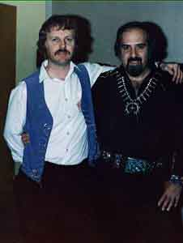

|  | Growing Up in Las Vegasa few recollections from Sheldon Rampton | |
| My father practicing on his xylophone. |
For awhile when I was very young, I actually thought that my father was a magician. One of my earliest memories is watching him get ready for work.We would have dinner, and then he would hurry to change into his black tuxedo and bowtie. We would follow him to the door as he disappeared into the night to perform his "magic."
When I got a little older and my vocabulary expanded, I realized of course that there was a difference between "magicians" and "musicians." My father had worked for a few years with a municipal orchestra in California, but the move to Las Vegas came when I was just three years old, and Vegas is where my real memories begin.
Vegas was a sort of mecca for performing artists--one of the few places where a musician or dancer could find steady work and the middle-class stability that comes with it. My father loved music, but he also cared about stability. In college he had studied accounting so he would have something to "fall back on." Until Vegas came along, he never really believed that he could make a permanent living as a performer, so the opportunities he found there must have seemed a little magical to him as well. Once we arrived, he never really looked further. Shortly before his death, the Las Vegas Musicians Union awarded him a plaque as the city's "longest-working musician." It is a record that will probably never be repeated, becaues the heyday of house bands and lavish stage shows has already ended. The gangsters who used to run the town may have been murderers and thieves, but they also liked a good party, and they knew the importance of loyalty. They kept people on the payroll even during the slow months when tourism was slow. The corporate bean-counters who replaced them have taken out the big shows and big bands, replacing them with keyboard synthesizers, tape-recorded music and small lounge acts. In today's world, my father might have turned into an accountant after all.
Our three-bedroom, one-story house at 229 Mallard Street was on the very edge of town. From our back yard you looked directly out into untouched desert. The Strip, with its monuments to glitter and excess, was a 15-minute drive away, but after we had seen it a few times, it lost its seemingly magical glow and became a mere backdrop to our lives, which were in most respects quite conventional for a young family living in the United States in the innocent early 1960s.
There was still something magical about my father's profession, of course. His collection of instruments grew steadily over the years, and eventually he converted our garage into a music room, soundproofed to minimize neighbors' complaints. His work night typically consisted of an early show which began around 7 in the evening, followed by a late show at around 10:00. He would usually come home between shows to watch television and relax. After the late show ended, he would return sometime past midnight, often in the company of other musicians who came to hang out and hold impromptu jazz sessions.
|  | ||
| This picture of my father (at left) was taken in the 1970s while he was touring as part of Elvis Presley's band. He remembered Elvis as a shy, easygoing man who kept to himself. Most of my father's career was spent as a musician playing for Las Vegas hotel show bands, but he toured a few times with traveling bands. |